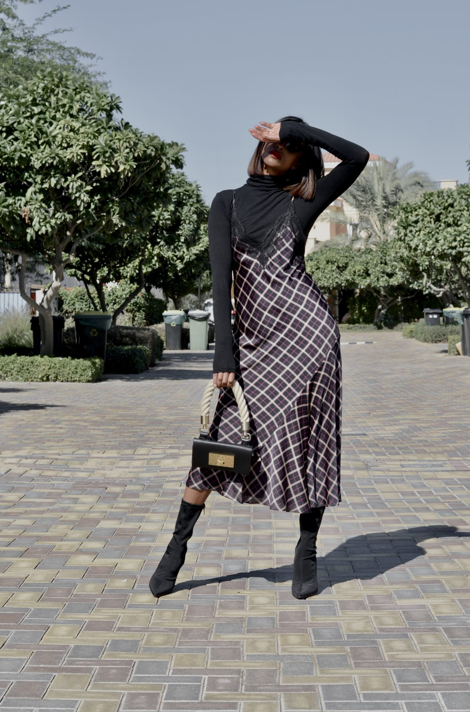

As the seasons transition and the air turns crisp, it's time to refresh your wardrobe with the latest fall fashion trends. This season, the key is to find the perfect balance between comfort and elegance. Oversized sweaters are making a strong comeback, providing warmth without sacrificing style. Pair them with high-waisted jeans or a midi skirt for a chic, relaxed look. Don't be afraid to experiment with different textures like cable-knit or cashmere for added depth. Accessorizing is the key to elevating your fall ensemble. Consider investing in a statement piece, such as a wide-brimmed hat or a chunky knit scarf. These accessories not only keep you warm but also add a touch of sophistication to any outfit. When it comes to footwear, knee-high boots are a staple this season. They not only provide an extra layer of insulation but also make a bold fashion statement. For outerwear, tailored coats are a must-have. Opt for a classic trench or a cozy cocoon coat to complete your fall look. Neutral tones like camel, charcoal, and deep burgundy are versatile choices that can effortlessly complement any outfit.
